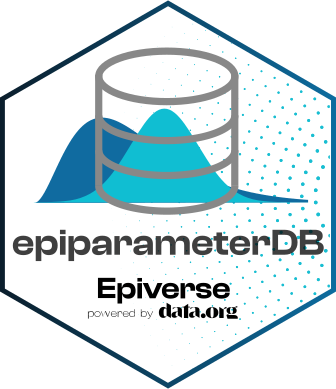

Changelog
Source:NEWS.md
epiparameterDB 0.1.0
CRAN release: 2024-11-28
This is the first minor release of the epiparameterDB R package. It contains the epidemiological parameter database originally part of the epiparameter R package.
New features
- The first release contains the parameter database (
parameters.json) from the epiparameter package v0.3.0. - Functionality to read the JSON file (
parameters.json), render the database as a vignette (database.Rmd), and validate the JSON database with a data dictionary (data_dictionary.json) using a GitHub actions workflow (validate-json.yaml) have been copied from the original epiparameter implementation.